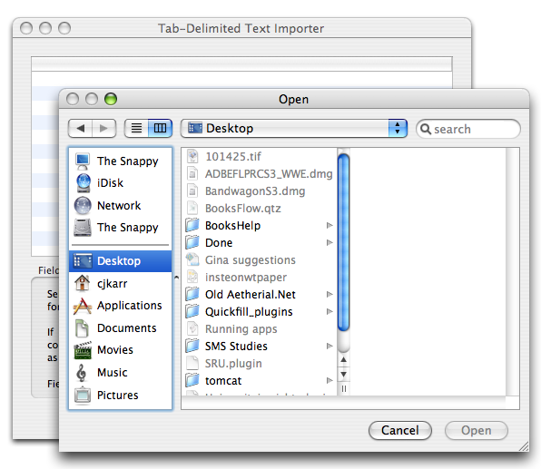

Importing Your Data
If you've been using another application (or home-grown solution) to manage your library, Books makes it easy to import that information. Under the File→Import menu, you will see a variety of importers. (You can also download additional importers from the Plugin Manager.) Click the desired importer and Books will launch it.

Tab-Delimited Text Importer
Upon launching, the importer typically will ask you for the file to load. For the simpler importers will parse the file and generate a list of books to import. Make sure that all of the records you want are selected and click the Import button.
More advanced importers will often provide an additional interface to help Books understand how to read your file. For example, the Tab Delimited Text Importer will present the parsed information in a mini-spreadsheet view and ask you to assign Books fields to individual columns. Other importers may provide different interfaces, so consult any documentation provided with those plugins.
Did You Know?
If you are using a homemade database to catalog your book collection and would like to import your data into Books, the simplest way to do this is to export a tab-delimited text file and open that file with the Tab-Delimited Text Importer. If your information resides in several files or databases, you will need to aggregate it into one table before exporting as a text file.